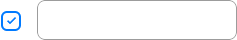
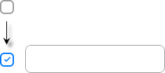
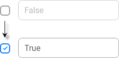
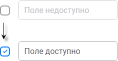
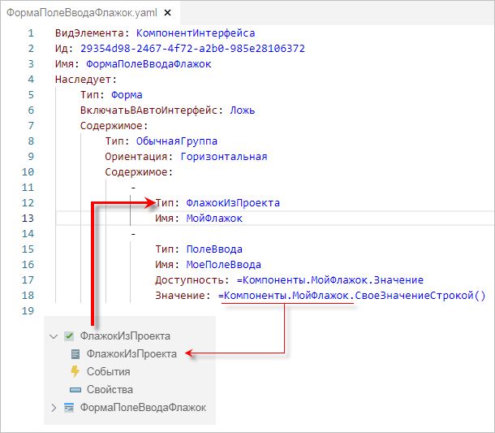
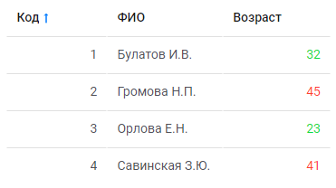

Вычисляемые свойства экземпляров компонентов
Свойства экземпляров компонентов интерфейса могут быть заданы не конкретным значением, а некоторой функцией. Иными словами они могут быть вычисляемыми. Прямым аналогом этого являются формулы ячеек в Excel.
Например, в форме расположены поле ввода и флажок.

Вы можете указать, что видимость поля ввода будет зависеть от состояния флажка, установлен он или нет.
ВидЭлемента: КомпонентИнтерфейса
Ид: 29354d98-2467-4f72-a2b0-985e28106372
Имя: ФормаПолеВводаФлажок
Наследует:
Тип: Форма
ВключатьВАвтоИнтерфейс: Ложь
Содержимое:
Тип: ОбычнаяГруппа
Ориентация: Горизонтальная
Содержимое:
-
Тип: Флажок
Имя: МойФлажок
-
Тип: ПолеВвода
Имя: МоеПолеВвода
Видимость: =Компоненты.МойФлажок.ЗначениеВажным моментом здесь является то, что свойства компонентов не только вычисляемые, но и наблюдаемые. То есть при их изменении
(МойФлажок.Значение) автоматически выполняется пересчет зависящих от них вычисляемых свойств
(МоеПолеВвода.Видимость).
«1С:Кабинет сотрудника» отслеживает изменение свойств компонентов и автоматически выполняет зависящую от них системную логику, например:
- обновление интерфейса, если свойство влияет на внешний вид компонента;
- обновление данных, если свойство влияет на их выборку;
- обновление отображаемых в компоненте данных при изменении свойства, ссылающегося на эти данные.
- если флажок сброшен, то виден только он;
- если флажок установлен, то виден он и поле ввода.

Методы значений
Как вы наверное заметили Компоненты.МойФлажок.Значение — это конструкция встроенного языка, которая обращается к объекту
типа ФормаПолеВводаФлажок.Компоненты (подробнее) и
получает от него именованный компонент содержимого МойФлажок и далее значение этого флажка типа
Булево.
Это говорит о том, что при описании свойств компонентов вы можете использовать и другие возможности встроенного языка, например, методы значений.
В этом примере значение флажка регулирует доступность поля ввода, а в само поле ввода записывается представление значения флажка:
ВидЭлемента: КомпонентИнтерфейса
Ид: 29354d98-2467-4f72-a2b0-985e28106372
Имя: ФормаПолеВводаФлажок
Наследует:
Тип: Форма
ВключатьВАвтоИнтерфейс: Ложь
Содержимое:
Тип: ОбычнаяГруппа
Ориентация: Горизонтальная
Содержимое:
-
Тип: Флажок
Имя: МойФлажок
-
Тип: ПолеВвода
Имя: МоеПолеВвода
Доступность: =Компоненты.МойФлажок.Значение
Значение: =Компоненты.МойФлажок.Значение.Представление()Пример работает следующим образом:

Методы модулей
Если для вычисления значения свойства компонента вам требуется более сложный алгоритм, вы можете разместить его в одном из модулей. Например в модуле самого компонента интерфейса, в данном случае в модуле формы ФормаПолеВводаФлажок:
метод ЗначениеДляПоля(Флажок: Булево): Строка
выбор Флажок
когда Истина
возврат "Поле доступно"
иначе
возврат "Поле недоступно"
;
;А в свойстве компонента просто обратиться к этому методу:
ВидЭлемента: КомпонентИнтерфейса
Ид: 29354d98-2467-4f72-a2b0-985e28106372
Имя: ФормаПолеВводаФлажок
Наследует:
Тип: Форма
ВключатьВАвтоИнтерфейс: Ложь
Содержимое:
Тип: ОбычнаяГруппа
Ориентация: Горизонтальная
Содержимое:
-
Тип: Флажок
Имя: МойФлажок
-
Тип: ПолеВвода
Имя: МоеПолеВвода
Доступность: =Компоненты.МойФлажок.Значение
Значение: =ЗначениеДляПоля(Компоненты.МойФлажок.Значение) Пример работает следующим образом:

Если, например, в качестве флажка вы хотите использовать не стандартный компонент, экземпляр которого вы описываете прямо тут, а компонент
интерфейса, добавленный в проект, то вы тоже можете обращаться к методам, описанным в его модулях. Например, к методу
СвоеЗначениеСтрокой():

Единственное, о чем нужно позаботиться, это о том, чтобы метод был виден снаружи модуля. Например, с помощью модификатора
@подсистема (подробнее):
@подсистема
метод СвоеЗначениеСтрокой(): Строка
выбор Значение
когда Истина
возврат "Поле доступно"
иначе
возврат "Поле недоступно"
;
;Вычисляемые свойства таблиц
При описании вычисляемых свойств колонок таблицы (СтандартнаяКолонкаТаблицы, ПроизвольнаяКолонкаТаблицы) вы можете использовать дополнительный параметр ДанныеЭлемента. В него передаются данные строки таблицы, тип которых зависит от источника таблицы.
Например, источником таблицы может являться динамический список и тогда ДанныеЭлемента будут иметь тип СтрокаДинамическогоСписка. Эти данные вы можете использовать для того, чтобы выбрать подходящее оформление для колонки Возраст, например:
ВидЭлемента: КомпонентИнтерфейса
Ид: 1612399b-4b7d-4dda-82e0-9d4110d9bcc8
Имя: ФормаТаблица
Наследует:
Тип: Форма
ВключатьВАвтоИнтерфейс: Ложь
Содержимое:
Тип: Таблица
Имя: Сетка
Источник:
Тип: ДинамическийСписок
ОсновнаяТаблица:
Таблица: Сотрудники
Поля:
-
Выражение: Код
-
Выражение: ФИО
-
Выражение: Возраст
Порядок:
-
Тип: ЭлементПорядка
Поле: Код
НаправлениеСортировки: ПоВозрастанию
Колонки:
-
Тип: СтандартнаяКолонкаТаблицы
Заголовок: Код
ПолеЗначения: Код
-
Тип: СтандартнаяКолонкаТаблицы
Заголовок: ФИО
ПолеЗначения: ФИО
-
Тип: СтандартнаяКолонкаТаблицы
Заголовок: Возраст
ПолеЗначения: Возраст
СтилиОформления: =ОформлениеКолонки(ДанныеЭлемента)В модуле формы метод ОформлениеКолонки() может выглядеть следующим образом:
метод ОформлениеКолонки(ДанныеЭлемента: Объект?): Массив<СтильОформления>
если ((ДанныеЭлемента как СтрокаДинамическогоСписка).Данные["Возраст"] как Число) < 40
возврат [СтильОформления.ЦветКоннотацияПоложительная]
иначе
возврат [СтильОформления.ЦветКоннотацияОтрицательная]
;
;Здесь сначала ДанныеЭлемента нужно привести к типу СтрокаДинамическогоСписка, т. к. «1С:Кабинет сотрудника» не может самостоятельно определить их тип. После этого возраст, полученный из соответствия
Данные, тоже нужно привести к типу Число, чтобы была возможность использовать его в операции
сравнения.
Метод возвращает один из стилей оформления, которые «1С:Кабинет сотрудника» применит к колонке таблицы.
В результате возраст меньше сорока будет показан зеленым цветом, а остальные значения - красным.
